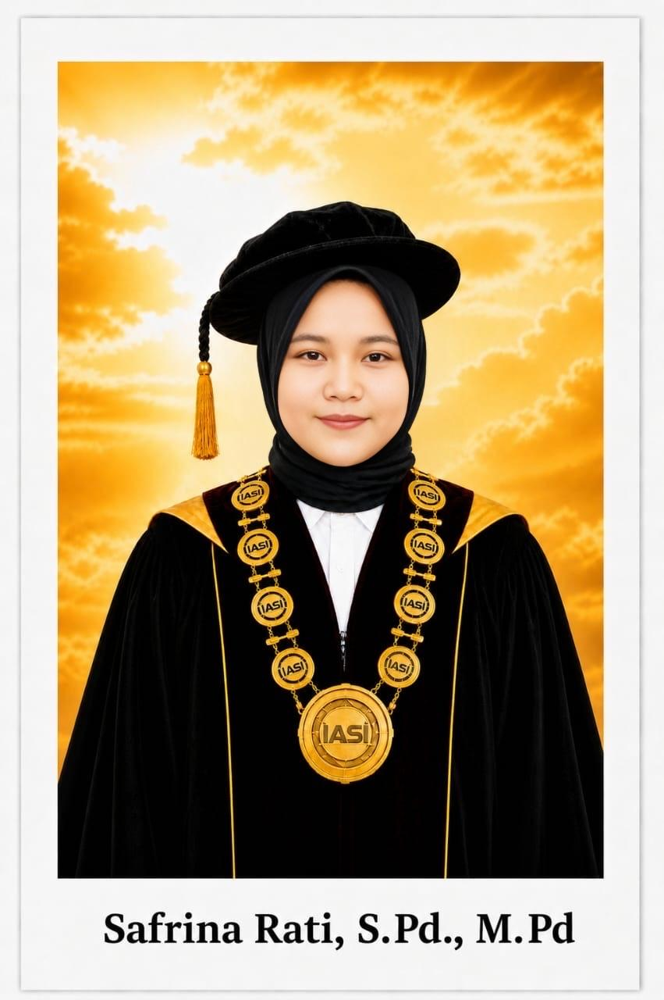
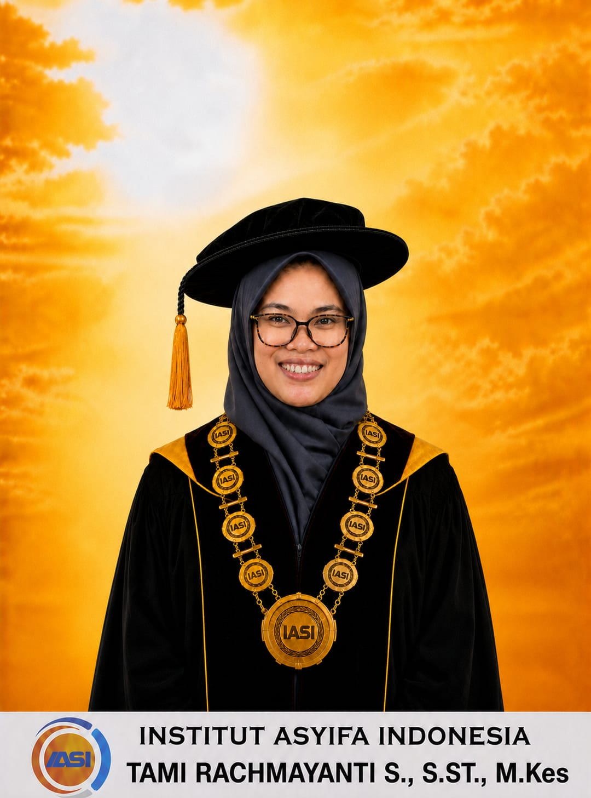
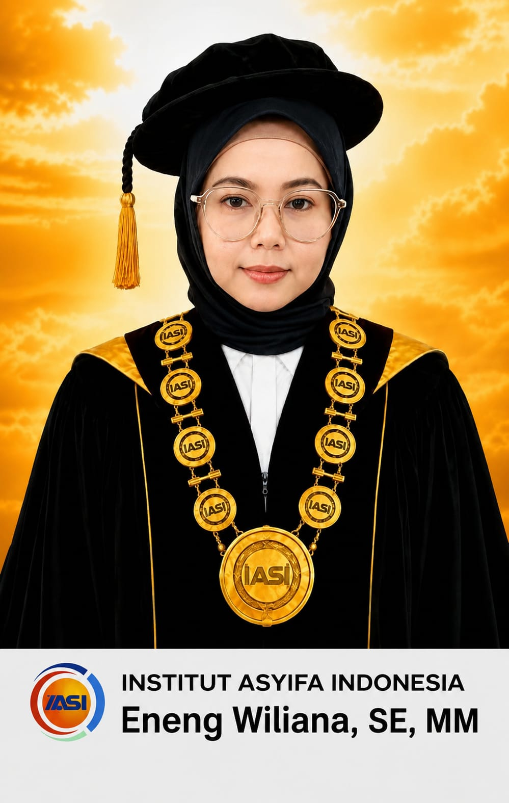
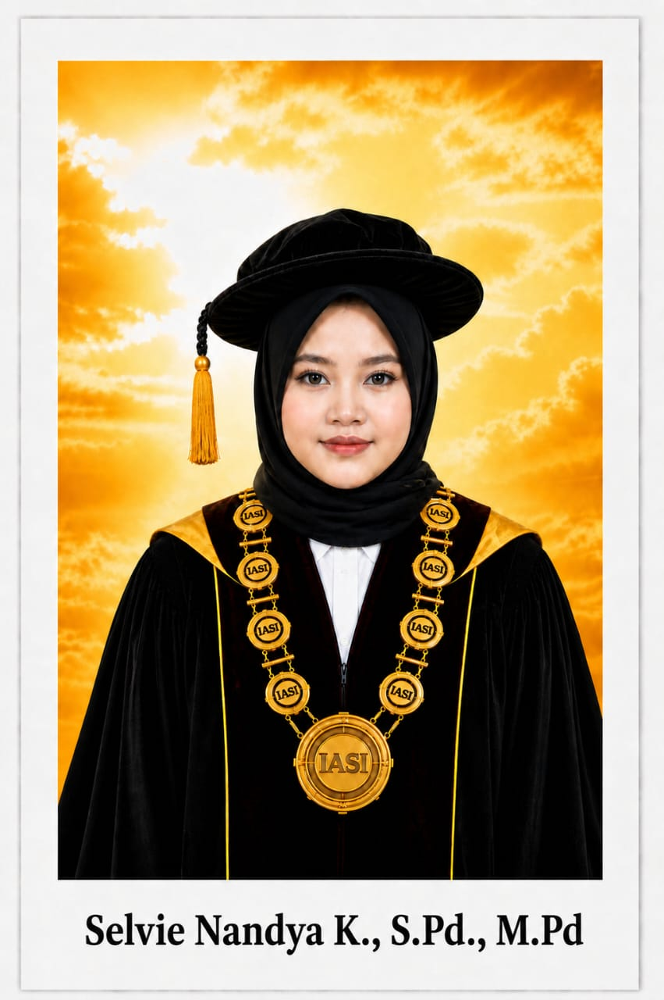

Jajaran pimpinan Institut Asyifa Indonesia yang berdedikasi tinggi dalam mengarahkan manajemen institusi menuju visi global.

Rektor Institut Asyifa Indonesia

Wakil Rektor I Bidang Akademik & Kemahasiswaan

Wakil Rektor II Bidang Administrasi Umum & Keuangan

Wakil Rektor III Bidang Kerjasama, Riset & Inovasi

Kaprodi S1 Ilmu Hukum

Kaprodi S1 Manajemen

Kaprodi S1 Pendidikan Bahasa Indonesia

Kaprodi D3 Kebidanan Kampus I (Indramayu)

Kaprodi D3 Kebidanan Kampus II (Tangerang)